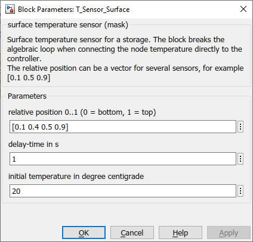

T_Sensor_Surface
Path: CARNOT/Control
Purpose:
Measurement sensor for temperatures in a storage tank.
Description:
The block takes the node temperatures of a
storage and determines
the correct temperature according to the specified postion.
The position can be a scalar or vector. If you enter a vector as a
parameter the output will be the temperatures at several positions.
The temperature is filtered by a PT-1 transfer function with a
defined time constant. The value measured at the start of the
simulation can be given.
Input:
| Tnodes | : | vector with the node temperatures of a storage in °C |
Output:
| T | : | temperature(s) in °C at the specified position(s) |
Parameters and Dialog Box:

Examples:
Open the example explorer from the Matlab command window
ExampleBrowser
or load the examples via the CARNOT library.
Characteristics:
| Direct Feedthrough | : | No |
| Sample Time | : | Inherited from driving block |
| Vectorized | : | Yes |